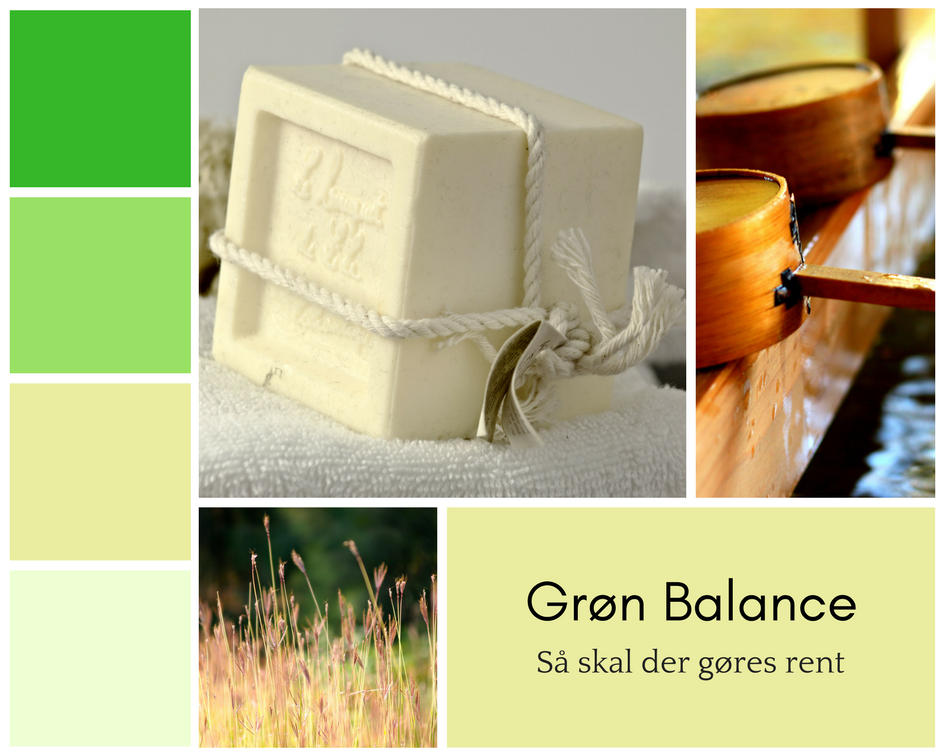

Onepage
I onepage projektet fik vi til opgave at lave et onepage omkring Grøn Balance Koncentreret Opvaskemiddel.
For at finde ud af hvad vores fokus på hjemmesiden skulle være valgte vi at lave en spørgeskemaundersøgelse der spurgte ind til, hvilken type opvaskemiddel de anvendte, hvad er årsagen til at de bruger lige netop det, om de anvender opvaskemiddel til andet end opvask, og om de er bevidste om miljøet til daglig.
Vores spørgeskema blev besvaret af cirka 150 personer og ud fra besvarelserne kom vi til konklusionen at størstedelen af dem brugte deres nuværende opvaskemiddel grundet økonomi, selvom en stor portion gerne vil skifte til mere miljøvenligt opvaskemiddel hvis det var økonomisk muligt.
Så var der også en god del der ikke brugte opvaskemiddel til andet end opvask, og vi valgte primært at fokusere på denne målgruppe, i stedet for den økonomiske del af det, da vi mente at det ville være for svært at lave en onepage hjemmeside om, hvorfor man burde købe Grøn Balance når det kun koster 10 kr per flaske, når en tilbudsavis typisk vil gøre et bedre arbejde.
Vi mente at det ville være bedre at arbejde med en side, der nærmest var en inspirationsbog i stedet for, sådan at vi kunne have mere frihed i forhold til designet.
Der blev også lavet et moodboard, som blev vores primære inspiration af farvevalg, da disse farver var noget vi begge sammenlignede med natur, da produktet er Grøn Balance, som går op i at være miljøvenlig.

Til indhold endte vi med at have et ”månedens tip”, en boks om grøn balance generelt, en lille boks om miljøet, en infoboks med kontaktinformation til Grøn Balance, og en boks til tilmelding af nyhedsbrev.
Vores onepage skulle også være lavet i et responsiv designlayout, selvom det mere endte op i et adaptiv designlayout, grundet problemer med at få baggrundsbillederne i boksene til at passe ordentligt, når man ændrede på størrelsen af browseren.
Link til hjemmesiden